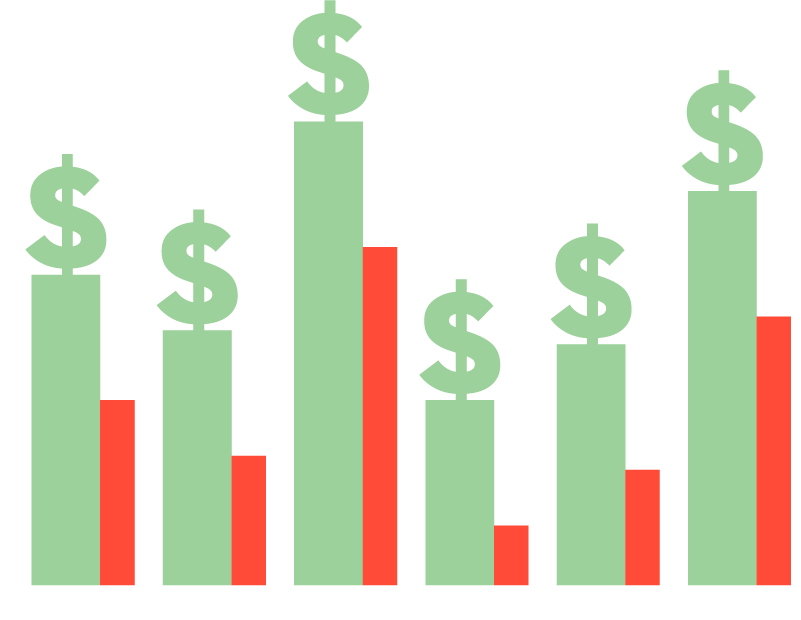

<!DOCTYPE html>

<html>

  <head>
    <meta charset="utf-8" />
    <meta name="description" content="Preston Wealth Advisors" />
    <meta name=viewport content="width=device-width, initial-scale=1">
    <title>Preston Wealth Advisors</title>
    <link rel="stylesheet" href="reset.css" type="text/css" />
    <link rel="stylesheet" href="style.css" type="text/css" />
    <link href='http://fonts.googleapis.com/css?family=Open+Sans:400,300,300italic,600,700,800' rel='stylesheet' type='text/css'>
    <link href='http://fonts.googleapis.com/css?family=Days+One' rel='stylesheet' type='text/css'>
  </head>

  <body>

    <header class="header-home">
      <div class="wrapper">
        <div class="align-left mobile-center">
          <a href="index.html"></a>
        </div>
        <nav class="mobile-center">
          <ul class="align-right">
            <a href="index.html"><li><span>Home</span></li></a>
            <a href="services.html"><li>Services</li></a>
            <a href="about.html"><li>About Us</li></a>
            <a href="institutions.html"><li>Institutions</li></a>
            <a href="blog.html"><li>Blog</li></a>
            <a href="contact.html"><li>Contact</li></a>
          </ul>
        </nav>
        <div class="clear"></div>
      </div>
    </header>

    <main class="main-home">
      <div class="wrapper">
        <div class="main-column align-left">
          <div class="align-center">
            
          </div>
          <div class="align-center mobile-center">
            <a class="button" href="services.html">Our Capabilities</a>
            <a class="button sub-button" href="contact.html">Contact Us</a>
          </div>
        </div>
        <div class="main-column align-right mobile-center">
          <div class="mobile-center">
            
            <div class="clear"></div>
            <div>
              <p class="main-home-p">In most investment firms, it does. Preston Wealth Advisors offers a different approach. We ask what you want and take the extraordinary step of listening to you. What we’ve found is that all clients, regardless of age, income, or employment status want 2 things: asset protection and growth. We’ve built our practice to meet their expectations.</p>
            </div>
          </div>
        </div>
        <div class="clear"></div>
      </div>
    </main>

    <section class="section-home">
      <div class="wrapper">
        <div class="section-column-home align-left">
          <div class="align-center"></div>
          <h2>How We Work</h2>
          <p class="section-p-home">Preston Wealth Advisors probe until we understand your risk tolerance’s precise latitude. Then we invest in the highest performing asset mix at a risk threshold acceptable to you.<br>
          Because we manage our own portfolios, Preston Wealth Advisors has complete discretion in how and where we invest.</p>
        </div>
        <div class="section-column-home align-left borders">
          <div class="align-center"></div>
          <h2>Protecting Your Assets</h2>
          <p class="section-p-home">First, we make trading decisions based on data, rather than emotion. Preston Wealth Advisors has developed a proprietary, patent-pending algorithm that constantly monitors the market, identifies growth sectors, and pinpoints specific performing ETF’s and Mutual Funds. Sector agnostic, the algorithm analyzes data daily and alerts us to buy or sell based on indicators we’ve selected and continuously tune. A Preston Wealth Advisor reviews the data before ever executing a trade.</p>
          <p class="hide section-p-home" id="show-on-click">Secondly, we take more aggressive positions when the market rises and sell when indicators signal it will fall. In the event neither fixed income nor equity investments offer enough return to justify the risk, our advisors can move 100% to cash. In 2008, our algorithm protected clients, limiting their losses in our most aggressive portfolios to just 5%, when the S&ampP dropped 37%</p>
          <p class="moreinfo align-right"><a href="#">Read more &gt;</a></p>
  				<p class="lessinfo align-right hide"><a href="#">Read less &gt;</a></p>
          <div class="clear"></div>
        </div>
        <div class="section-column-home align-right">
          <div class="align-center"></div>
          <h2>Growing Your Wealth</h2>
          <p class="section-p-home">The same algorithm protecting clients in volatile markets maximizes their investments when it roars. Many of our retired clients avail themselves of our growth funds because they trust our algorithm to protect their principal while multiplying their assets.<br>
          <a href="contact.html">Contact us now</a> to get started growing your wealth and protecting your assets!</p>
        </div>
        <div class="clear"></div>
      </div>
    </section>

    <footer class="footer-home">
      <div class="wrapper">
        <div class="footer-column-home align-left mobile-center">
          
          <p class="footer-p">1886 Metro Center Dr.<br>
          Suite 620<br>
          Reston, VA 20190<br>
          Phone (703) 757-0419<br>
          Fax (703) 757-0430<br>
          For more information please email us at: <br>
          <a href="mailto:tjdoremus@prestonwealthadvisors.com">tjdoremus@prestonwealthadvisors.com</a> or <br>
          <a href="mailto:gmattingly@prestonwealthadvisors.com">gmattingly@prestonwealthadvisors.com</a></p>
        </div>
        <div class="footer-column-home align-left">
          <h3>Find us here!</h3>
          <div class="map"><iframe src="https://www.google.com/maps/embed?pb=!1m18!1m12!1m3!1d3102.822002430413!2d-77.34076030000001!3d38.9508946!2m3!1f0!2f0!3f0!3m2!1i1024!2i768!4f13.1!3m3!1m2!1s0x89b6482e2c339799%3A0xcf727a5bdcbdbc6c!2s1886+Metro+Center+Dr+%23620%2C+Reston%2C+VA+20190!5e0!3m2!1sen!2sus!4v1438570536650" width="400" height="250" allowfullscreen></iframe></div>
        </div>
        <div class="footer-column-home align-right">
          <h3>Disclaimer</h3>
          <div class="disc-container"><p class="footer-p disclaimer">It should not be assumed that recommendations made in the future will be profitable or will equal the performance of the securities in this list. All performance calculations prior to 2013 have been done by the research department and have not been audited or verified by PWA or any outside 3rd party. The performance was calculated using live models and actual trades but not through PWA's platform. Past performance may not be indicative of future results and the performance of a specific individual client account may vary substantially from the composite performance results. Therefore, no current or prospective client should assume that future performance will be profitable, or equal either the Preston Wealth Advisors’ composite performance results reflected above, or the performance results for any of the comparative index benchmarks provided.</p>
            <p id="show-this-on-click" class="hide footer-p disclaimer">Preston Wealth Advisors (“PWA”) is an SEC registered investment adviser located in Reston, VA. PWA is registered in the state of Virginia and in compliance with the current registration requirements of the states in which PWA maintains clients. PWA may only transact business in those states in which it is registered, or qualifies for an exemption or exclusion from registration requirements.<br><br>
            PWA’s web site is limited to the dissemination of general information pertaining to its advisory services, together with access to additional investment-related information, publications, and links. Accordingly, the publication of PWA’s web site on the Internet should not be construed by any consumer and/or prospective client as PWA’s solicitation to effect, or attempt to effect transactions in securities, or the rendering of personalized investment advice for compensation, over the Internet. Any subsequent, direct communication by PWA with a prospective client shall be conducted by a representative that is either registered or qualifies for an exemption or exclusion from registration in the state where the prospective client resides.</p>
            <p class="align-right footer-p readmore"><a href="#">Read more &gt;</a></p>
    				<p class="align-right hide footer-p readless"><a href="#">Read less &gt;</a></p>
          </div>
        </div>
        <div class="clear"></div>
        <p class="footer-p disclaimer">©2015 Preston Wealth Advisors</p>
      </div>
    </footer>

    <script src="https://ajax.googleapis.com/ajax/libs/jquery/2.1.4/jquery.min.js"></script>
    <script src="velocity.js"></script>
		<script src="index.js"></script>

  </body>

</html>
